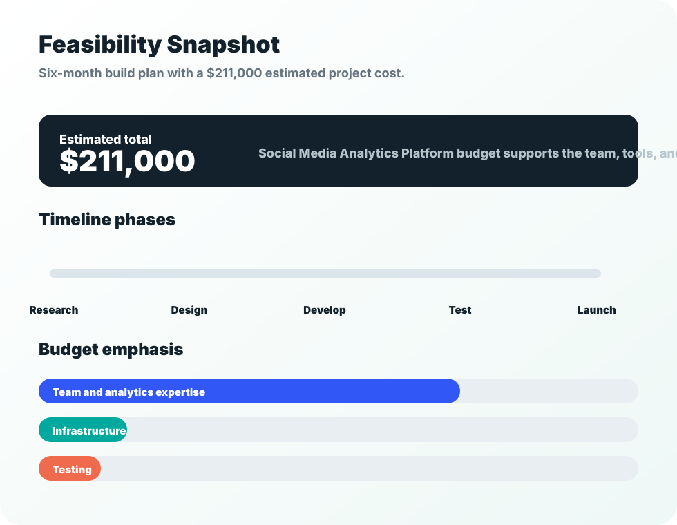

Research
Define user needs, benchmark analytics tools, and map the performance data required for useful recommendations.
Feasibility, cost, and qualifications
The proposal estimates that Social Media Analytics Platform can be developed in approximately six months through research, system design, development, testing, and final execution.
Timeline
A staged timeline gives the team room to research user needs, design a stable system, test analytics accuracy, and adjust the product before launch.
Define user needs, benchmark analytics tools, and map the performance data required for useful recommendations.
Plan account connection, data collection, dashboard structure, and recommendation logic.
Build the core platform, analytics views, performance panel, and posting recommendation engine.
Validate data accuracy, usability, security expectations, and stability before launch.
Prepare deployment, refine interface language, and release the platform for user feedback.

Cost
The largest portion of the budget supports skilled developers and data analysts. Additional funding supports infrastructure, analytics tools, testing, and launch readiness.
Qualifications
The proposal highlights experience in data analytics, social media analysis, and research projects, with practical work in Python, SQL, and Excel. Those skills support the platform's main purpose: identifying patterns and explaining them in a simple, practical way.
The platform addresses a real gap in the social media industry by helping creators understand their audience, improve content quality, and create value for the platforms they use.
Meet the team